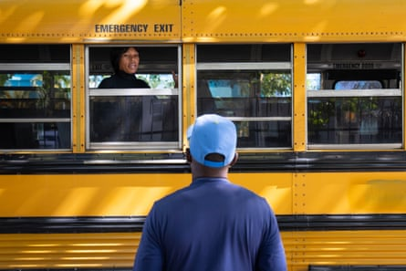

Pregnant women and new mothers are being rounded up in hospitals in the Dominican Republic and deported back to Haiti as part of what observers say is an openly cruel, racist and misogynist government policy.
More than 130 Haitian women and children were removed on the first day of a new crackdown on undocumented migrants last week targeting the Caribbean country’s main public hospitals. Dominican authorities said 48 were pregnant, 39 were new mothers and 48 were children . Local media reported that one woman was deported while in labour .
Pregnant women have been crossing the border in increasing numbers over the past few years, looking for a safer place to give birth after the almost complete collapse of Haiti’s healthcare system .
The measure is one of a series announced by President Luis Abinader to reduce the number of undocumented migrants in the Dominican Republic, which shares the island of Hispaniola with Haiti , where there is a dire humanitarian crisis.
“We’re shocked by the government determination to fuel policies which are openly cruel, racist and misogynist,” said Guillermo Rodríguez, rights campaigner for the Americas at Amnesty International. “Authorities allege that deportations are for the sake of the Dominican Republic, but no prosperity or good can be achieved if it is based on cruelty and human suffering.”
Targeting hospitals was “outrageous”, said Rodrígues. “[The government] is forcing people to choose between deportation or risking pregnancy complications which could eventually lead to maternal mortality, morbidity or neonatal death. It is a macabre and misogynist trap.”
In a statement , Dominican authorities said women and children were seen by medical staff and discharged from hospitals after it was confirmed there were no health risks. They were then deported in comfortable buses in accordance with “international and national legal provisions”, they said.
Reem Alsalem, a UN special rapporteur on violence against women, said the treatment of Haitians by the Dominican Republic was an “area of concern”. Returning people to Haiti where their lives would be in danger was not safe, she said. “Unfortunately the treatment of Haitians … is not in line with the Dominican Republic’s international and regional obligations,” she said.
The Dominican Republic has been deporting pregnant women, raiding homes and stopping people in the street for the past four years. In October, the government announced a target of deporting 10,000 Haitian migrants a week.
In 2023, a UN group, including Alsalem, condemned the detention and deportation of pregnant and postpartum Haitian women from the Dominican Republic. A UN committee has also highlighted that some women have been forcibly separated from their children .
The worsening situation in Haiti has severely damaged health services. Cholera outbreaks are spreading. Gender-based violence is increasing and sexual violence against children has risen tenfold , according to the UN. At least 5,600 people were killed in gang violence last year. The kidnap and murder of workers has put about two-thirds of medical facilities out of use.
A Haitian woman on an immigration bus speaks with a relative in front of the Our Lady of Altagracia maternity hospital in Santo Domingo, the Dominican Republic, 23 April.Photograph: Orlando Barría/EPA
Roudy Joseph, a spokesperson for the community group Haitians in the Dominican Republic, said the crackdown “put the health and lives of people, of women, at risk”.
“This is the consolidation of an apartheid regime that should be criticised or denounced by the international community,” he said.
Liliana Dolis, the director of Movimiento de Mujeres Dominico-Haitianas (Dominican-Haitian Women’s Movement), said deporting vulnerable women and children back to Haiti was “inhumane”.
She said there was an atmosphere of fear among Haitians in the Dominican Republic where women were reluctant to attend health checkups and endanger their lives as a result. “It’s an anti-women, anti-feminist attitude,” she said. “It is an attitude of gender violence, and obstetric violence.”